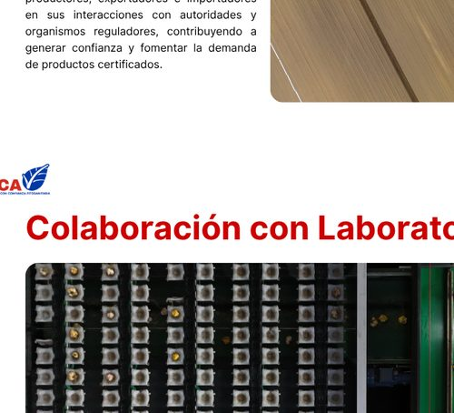
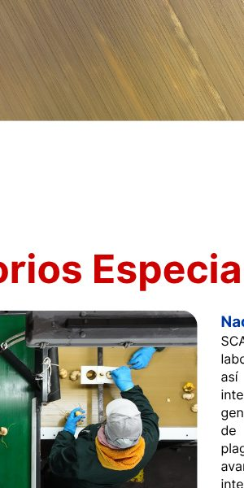
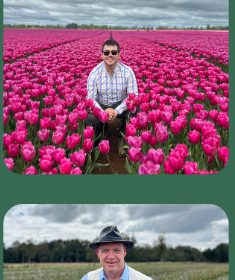
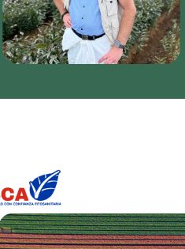
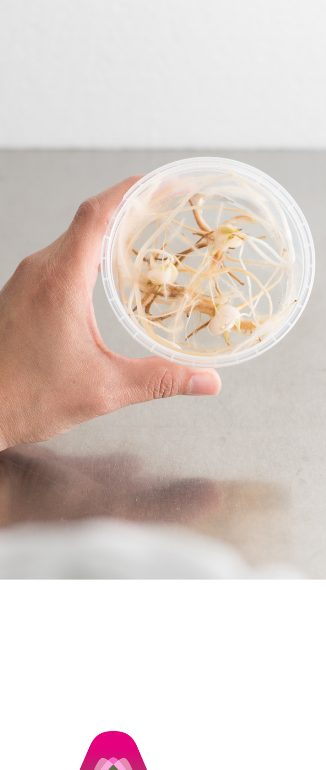
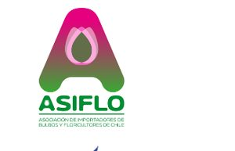
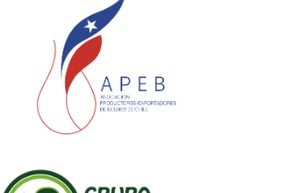
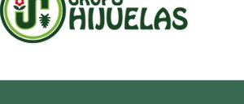

SCA colabora estrechamente con un laboratorio local reconocido por el SAG, así como con diversos laboratorios internacionales, lo que ha permitido la generación de lotes certificados a partir de material vegetal declarado libre de plagas fitosanitarias mediante técnicas avanzadas y reconocidas internacionalmente.
Uno de estos laboratorios internacionales, con sede en los Países Bajos, ya cuenta con autorización del SAG, permitiéndole un eficiente de las tecnologías de diagnóstico más recientes en apoyo a las exportaciones chilenas. ¿Te gustaría también establecer una autorización para que su empresa que los análisis de patógenos y plagas realizados por un laboratorio extranjero sean reconocidos por el SAG?
SCA es una organización basada en el conocimiento, la experiencia y una sólida trayectoria en los sectores en los que opera. Nuestras actividades son lideradas por:

Se desempeñó como Inspector de Certificación de Semillas, ejerció durante 5 años y medio como Encargado de Protección Agrícola y Forestal en SAG Osorno y durante 2 años y medio como Supervisor en USDA/APHIS. Actualmente es el Director Ejecutivo de SCA.
Competencias, experiencia y conocimientos:Sistemas de inspección y certificación fitosanitaria, regulaciones fitosanitarias internacionales (SAG / USDA-APHIS), supervisión y coordinación de equipos de inspección, implementación de sistemas de trazabilidad y control; y inspecciones en terreno y supervisión regulatoria.

Trabajó durante 25 años en el Servicio Holandés de Inspección de Bulbos Florales (BKD) bajo el Ministerio de Agricultura, de los cuales 8 años fueron en Bulb Quality Support (una filial de BKD). Actualmente es Director Técnico del Consejo y asesor en SCA.
Competencias, experiencia y conocimientos:Sistemas fitosanitarios, desarrollo de enfoques de sistemas y sistemas de inspecciones, estrategias de laboratorio para material de propagación libre de patógenos/plaga, reconocimiento y determinación de síntomas; y capacitación y formación en materias fitosanitarias e inspecciones de campo.



